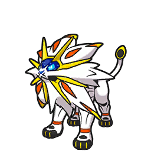

Pokémon is a popular media franchise created by Nintendo, Game Freak, and Creatures Inc.
The word “Pokémon” is short for “Pocket Monsters.”
It revolves around fictional creatures called Pokémon, which humans, known as Pokémon Trainers, catch and train to battle each other.
Pokémon first appeared as a video game series and later expanded into animated shows,movies, trading cards, and merchandise.
Each Pokémon has unique abilities, characteristics, and elemental types that define how it behaves and battles.
Every Pokémon creature has an array of stats. HP (Hit Points) is a Pokémon's life force.
If your Pokémon's HP hits zero, it faints and is no longer usable in battle (it can still use Hidden Machines, though).
The speed stat decides which Pokémon will make the first move in battle. This stat can be critical in long battles.
Attack and Special Attack measure the strength of moves used by your Pokémon; the higher this is, the more damage you will do to opponents.
Attack corresponds to moves in the Physical category, while Special Attack corresponds to Special moves.
Similarly, Defense and Special Defense measure the ability to take attacks from other Pokémon; the higher the stat is, the fewer Hit Points will be lost when attacked.
Defense corresponds to moves in the Physical category, while Special Defense corresponds to Special moves.